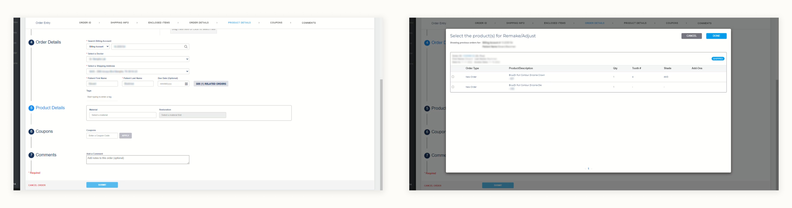
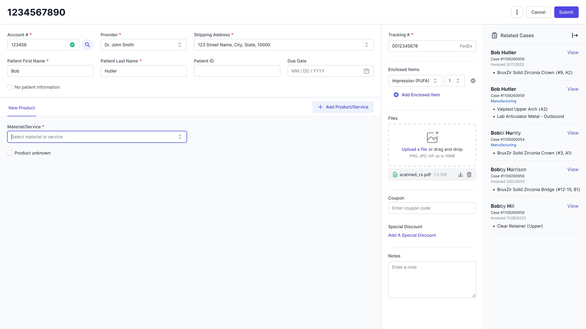
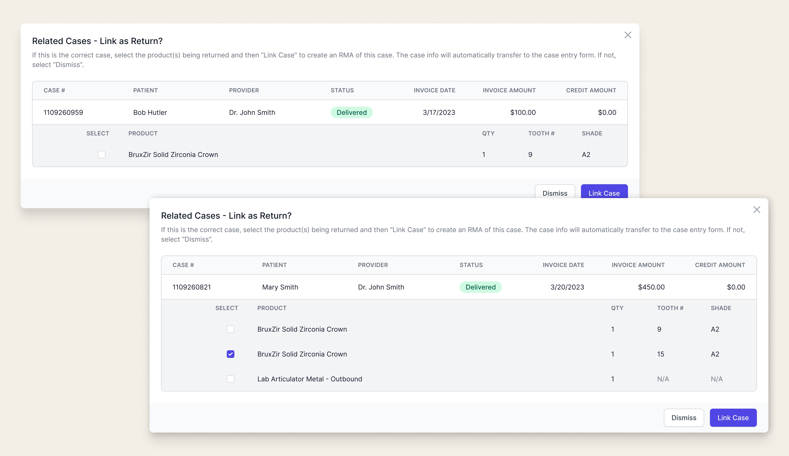
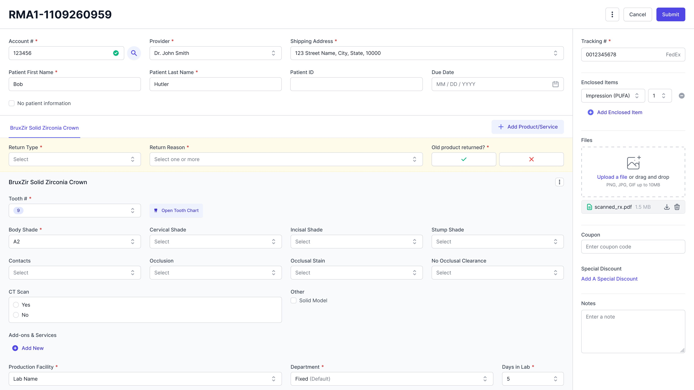

Inherited a shelved solution, a hard deadline, and a team expecting the impossible. Here's what shipped.
The Lab Management System is an internal application built to replace two outdated legacy systems used to manage and track dental restoration cases across the lab. I was brought in to take over one of Glidewell's largest ongoing initiatives.
Before my arrival, the UX team had explored improving the return entry workflow — specifically, shifting return initiation from internal data-entry users to the customers themselves (dentists). They conducted research and built a robust solution. But with other priorities taking over, the feature was put on hold indefinitely.
When I joined, the deadline was approaching fast. The original scope was no longer feasible. My job was to revisit the shelved work, understand what was still valid, and redesign a scoped version that could actually ship.
Redesign the return process to support data-entry users in manually entering returns at case entry — maintaining a familiar workflow from the legacy system while adapting it for the new LMS platform.
As the newest member, I had the least familiarity with both the business and the design work that came before me. Rather than guess, I took the initiative to fill that gap directly.
I reached out to stakeholders across departments and arranged a full lab walkthrough — observing how teams actually used the legacy systems, how they handled returns, and where the friction points were.
After gathering my notes, I analyzed the current process and pain points side by side with the previous team's work — understanding what had already been solved well, what needed to be reconsidered, and what constraints I was actually designing within.

One of the legacy systems — the starting point for understanding the existing workflow
Linking cases wasn't just a technical requirement — it was a familiar anchor. Replicating the legacy system's case-linking pattern would help data-entry users transition to the new platform without losing the muscle memory they'd built over years.
A key component of creating returns is the ability to link related cases — a capability that had to be supported at case entry, just as it was in the legacy system. What started as a functional requirement became a hidden win: preserving a familiar interaction pattern gave users something recognizable in an otherwise new environment.
As the newest member of the team, I had limited understanding of the business and almost no familiarity with the design work done before my arrival. Getting up to speed quickly wasn't optional — the deadline was already close.
What I did: I connected with stakeholders directly to gain business context, and collaborated with fellow designers to review previous documentation and design decisions. The time investment gave me the foundation I needed to make informed decisions rather than assumptions.
Replacing a robust legacy system with an MVP is never straightforward — especially when the business workflow is complex and edge cases are everywhere. The scope had already been cut once, and I was designing within what remained.
What I did: I kept the first release in perspective: it's a starting point, not a final answer. I communicated regularly with engineers to align on what was technically feasible, making deliberate compromises that didn't close the door on future improvements.
I explored three approaches for surfacing related cases within the case entry flow, each balancing visibility, familiarity, and the complexity of the information being presented.
A color-coded banner alerts users when related cases are found, with a modal to view details. Familiar and space-efficient — but easy to miss, and the extra click to surface details adds friction.
All related cases displayed persistently in a side panel — no extra click required. More visible, but potentially overwhelming with a high volume of related cases and limited by side panel functionality.
Related cases shown in the side panel for easy scanning, with a modal for focused detail review when needed. Most similar to the legacy system workflow — familiar and scalable.
Exploration 3 won because it matched how users already worked. In a new system full of unfamiliar patterns, giving users one familiar anchor reduced cognitive load and eased the transition.
Related cases surface automatically based on account number and provider number, with filtering by product. Users can scan the full list without leaving the case entry flow — no additional clicks required to see what's there.

Selecting a case opens a focused modal for reviewing the specific information needed to confirm the correct case. Users can select one or more products as needed — built to scale with planned enhancements without requiring a structural overhaul.

Once a case is linked, relevant information from the original case carries over automatically — reducing manual input and the risk of data-entry errors. A RMA prefix is applied to the case number to track return cases and maintain a clear link to the original.

Different return types are distinguished by clearly color-coded banners, making it easy for data-entry users to identify and switch between return types without confusion. Each type is visually distinct and immediately recognizable.
The redesigned return entry workflow shipped as part of the LMS MVP — giving data-entry users a familiar, functional process in a new system. The case-linking pattern from the legacy system carried over intact, the side panel reduced friction for high-volume users, and the RMA prefix laid the groundwork for future customer-initiated returns.
The design didn't solve everything the original concept set out to. But it solved what it needed to, for the users who needed it most, within the constraints that existed.
What I'd do differently: I'd advocate earlier for even lightweight usability testing with actual data-entry users before finalizing the side panel layout. We relied heavily on legacy system comparisons and internal review — real user observation would have surfaced edge cases faster.